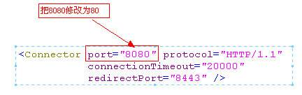
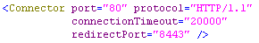
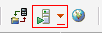
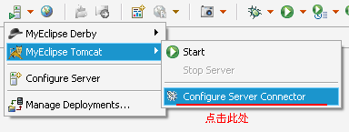
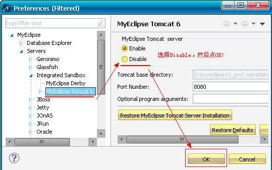
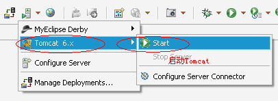
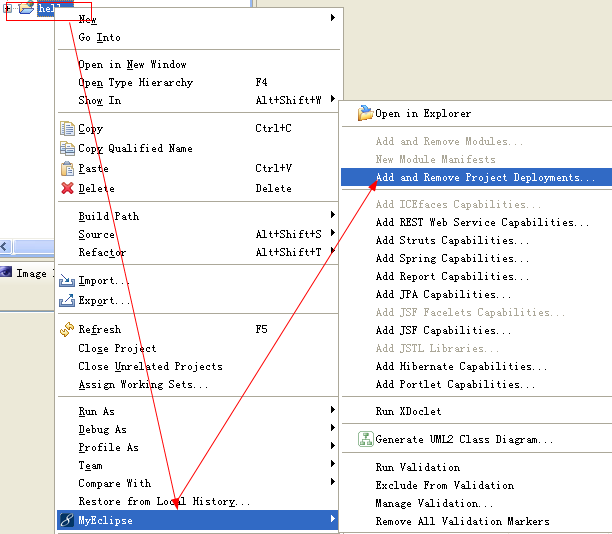
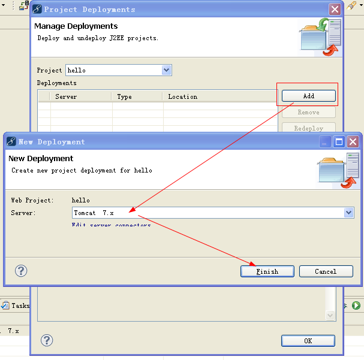
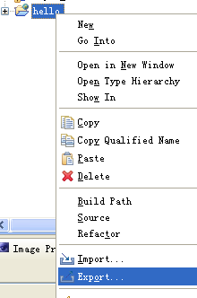
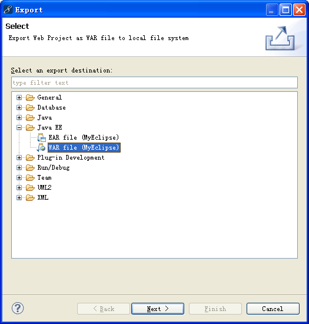

JavaWeb学习总结（一）JavaWeb入门与Tomcat
一、常见软件系统体系结构B/S、C/S
1. C/S
- C/S结构即客户端/服务器（Client/Server），例如QQ；
- 需要编写服务器端程序，以及客户端程序，例如我们安装的就是QQ的客户端程序；
- 缺点：软件更新时需要同时更新客户端和服务器端两端，比较麻烦；
- 优点：安全性比较好。
2. B/S
- B/S结构即浏览器/服务器（Browser/Server）；
- 优点：只需要编写服务器端程序；
- 缺点：安全性较差。
二、Web资源与Web服务器
1. Web资源
- html：静态资源；
- JSP/Servlet ：动态资源。
当然，除了JavaWeb程序，还有其他Web程序，例如：ASP、PHP等。
2. Web服务器
Web服务器的作用是接收客户端的请求，给客户端作出响应。
对于JavaWeb程序而已，还需要有JSP/Servlet容器，JSP/Servlet容器的基本功能是把动态资源转换成静态资源。
我们需要使用的是Web服务器和JSP/Servlet容器，通常这两者会集于一身。下面是对JavaWeb服务器：
- Tomcat（Apache）：当前应用最广的JavaWeb服务器；
- JBoss（Redhat红帽）：支持JavaEE，应用比较广；EJB容器；
- GlassFish（Orcale）：Oracle开发JavaWeb服务器，应用不是很广；
- Resin（Caucho）：支持JavaEE，应用越来越广；
- Weblogic（Orcale）：要钱的！支持JavaEE，适合大型项目；
- Websphere（IBM）：要钱的！支持JavaEE，适合大型项目；
三、Tomcat
1. Tomcat概述
2. 安装、启动、配置Tomcat
下载Tomcat可以到http://tomcat.apache.org/下载。
Tomcat分为安装版和解压版：
- 安装版：一台电脑上只能安装一个Tomcat；
- 解压版：无需安装，解压即可用，解压多少份都可以，所以我们选择解压版。
3. 启动和关闭Tomcat
在启动Tomcat之前，我们必须要配置环境变量：
- JAVA_HOME：必须先配置JAVA_HOME，因为Tomcat启动需要使用JDK；
- CATALANA_HOME：如果是安装版，那么还需要配置这个变量，这个变量用来指定Tomcat的安装路径，例如：F:\apache-tomcat-7.0.42。
- 启动：进入%CATALANA_HOME%\bin目录，找到startup.bat ，双击即可；
- 关闭：进入%CATALANA_HOME%\bin目录，找到shutdown.bat，双击即可；
startup.bat会调用catalina.bat，而catalina.bat会调用setclasspath.bat，setclasspath.bat会使用JAVA_HOME环境变量，所以我们必须在启动Tomcat之前把JAVA_HOME配置正确。
启动问题：点击startup.bat后窗口一闪即消失：检查JAVA_HOME环境变量配置是否正确；
4. 配置端口号
打开%CATALANA_HOME%\conf\server.xml文件：

http默认端口号为80，也就是说在URL中不给出端口号时就表示使用80端口。当然你也可以修改为其它端口号。
当把端口号修改为80后，在浏览器中只需要输入：http://localhost/就可以访问Tomcat主页了。
5. Tomcat的目录结构
- bin：该目录下存放的是二进制可执行文件，如果是安装版，那么这个目录下会有两个exe文件：tomcat6.exe、tomcat6w.exe，前者是在控制台下启动Tomcat，后者是弹出UGI窗口启动Tomcat；如果是解压版，那么会有startup.bat和shutdown.bat文件，startup.bat用来启动Tomcat，但需要先配置JAVA_HOME环境变量才能启动，shutdawn.bat用来停止Tomcat；
-
conf：这是一个非常非常重要的目录，这个目录下有四个最为重要的文件：
- server.xml：配置整个服务器信息。例如修改端口号，添加虚拟主机等；下面会详细介绍这个文件；
- tomcatusers.xml：存储tomcat用户的文件，这里保存的是tomcat的用户名及密码，以及用户的角色信息。可以按着该文件中的注释信息添加tomcat用户，然后就可以在Tomcat主页中进入Tomcat Manager页面了；
- web.xml：部署描述符文件，这个文件中注册了很多MIME类型，即文档类型。这些MIME类型是客户端与服务器之间说明文档类型的，如用户请求一个html网页，那么服务器还会告诉客户端浏览器响应的文档是text/html类型的，这就是一个MIME类型。客户端浏览器通过这个MIME类型就知道如何处理它了。当然是在浏览器中显示这个html文件了。但如果服务器响应的是一个exe文件，那么浏览器就不可能显示它，而是应该弹出下载窗口才对。MIME就是用来说明文档的内容是什么类型的;
- context.xml：对所有应用的统一配置，通常我们不会去配置它；
- lib：Tomcat的类库，里面是一大堆jar文件。如果需要添加Tomcat依赖的jar文件，可以把它放到这个目录中，当然也可以把应用依赖的jar文件放到这个目录中，这个目录中的jar所有项目都可以共享之，但这样你的应用放到其他Tomcat下时就不能再共享这个目录下的Jar包了，所以建议只把Tomcat需要的Jar包放到这个目录下；
- logs：这个目录中都是日志文件，记录了Tomcat启动和关闭的信息，如果启动Tomcat时有错误，那么异常也会记录在日志文件中；
- temp：存放Tomcat的临时文件，这个目录下的东西可以在停止Tomcat后删除；
- webapps：存放web项目的目录，其中每个文件夹都是一个项目；如果这个目录下已经存在了目录，那么都是tomcat自带的。项目。其中ROOT是一个特殊的项目，在地址栏中没有给出项目目录时，对应的就是ROOT项目。http://localhost:8080/examples，进入示例项目。其中examples就是项目名，即文件夹的名字；
- work：运行时生成的文件，最终运行的文件都在这里。通过webapps中的项目生成的！可以把这个目录下的内容删除，再次运行时会生再次生成work目录。当客户端用户访问一个JSP文件时，Tomcat会通过JSP生成Java文件，然后再编译Java文件生成class文件，生成的java和class文件都会存放到这个目录下；
- LICENSE：许可证；
- NOTICE：说明文件；
四、Web应用
静态网站：
- 在webapps目录下创建一个目录（命名必须不包含中文和空格），这个目录称之为项目目录；
- 在项目目录下创建一个html文件；
动态网站：
- 在webapps目录下创建一个项目目录；
- 在项目目录下创建如下内容：
- WEB-INF目录：在WEB-INF目录下创建web.xml文件（web.xml文件的内容，我们可以去其他项目中借！）
- 创建静态或动态页面；
1. 创建静态应用
- 在webapps下创建一个hello目录；
- 在webapps\hello\下创建index.html；
- 启动tomcat；
- 打开浏览器访问http://localhost:8080/hello/index.html
index.html
1 <html> 2 <head> 3 <title>hello</title> 4 </head> 5 <body> 6 <h1>Hello World!</h1> 7 </body> 8 </html>
2. 创建动态应用
- 在webapps下创建hello1目录；
- 在webapps\hello1\下创建WEB-INF目录；
- 在webapps\hello1\WEB-INF\下创建web.xml；
- 在webapps\hello1\下创建index.html。
- 打开浏览器访问http://localhost:8080/hello/index.html
web.xml
1 <?xml version="1.0" encoding="UTF-8"?> 2 <web-app version="2.5" 3 xmlns="http://java.sun.com/xml/ns/javaee" 4 xmlns:xsi="http://www.w3.org/2001/XMLSchema-instance" 5 xsi:schemaLocation="http://java.sun.com/xml/ns/javaee 6 http://java.sun.com/xml/ns/javaee/web-app_2_5.xsd"> 7 </web-app>
完整的Web应用还需要在WEB-INF目录下创建：
- classes；
- lib目录；
webapps
|- hello
|-index.html
|-WEB-INF
|-web.xml
|-classes
|-lib
hello：应用目录，hello就是应用的名称；
- index.html：应用资源。应用下可以有多个资源，例如css、js、html、jsp等，也可以把资源放到文件夹中，例如：hello\html\index.html，这时访问URL为：http://localhost:8080/hello/html/index.html；
- WEB-INF：这个目录名称必须是大写，这个目录下的东西是无法通过浏览器直接访问的，也就是说放到这里的东西是安全的；
- web.xml：应用程序的部署描述符文件，可以在该文件中对应用进行配置，例如配置应用的首页：
<welcome-file-list>
<welcome-file>index.html</welcome-file>
</welcome-file-list>
- classes：存放class文件的目录；
- lib：存放jar包的目录；
3. 配置外部应用
原来我们的项目放到webapps下，现在我放到外面，也希望tomcat可以找到它！
也可以把应用放到Tomcat之外，这就是外部应用了。例如我们把上面写的hello应用从webapps目录中剪切到C盘下，即C:/hello。现在hello这个Web应用已经不在Tomcat中了，这时我们需要在tomcat中配置外部应用的位置，配置的方式一共有两种：
- conf/server.xml：打开server.xml文件，找到<Host>元素，在其中添加<Context>元素，代码如下：
server.xml
<Host name="localhost" appBase="webapps" unpackWARs="true" autoDeploy="true"> <Context path="hello" docBase="C:/hello"/> </Host>
1) path：指定当前应用的名称；
2) docBase：指定应用的物理位置；
3) 浏览器访问路径：http://localhost:8080/itcast_hello/index.html。
- conf/catalana/localhost：在该目录下创建hello.xml文件，在该文件中编写<Context>元素，代码如下：
<Context docBase="C:/hello"/>
1) 文件名：指定当前应用的名称；
2) docBase：指定应用的物理位置；
3) 浏览器访问路径：http://localhost:8080/itcast_hello/index.html。
4. 理解server.xml
<Server>
<Servier>
<Connector>
<Engine>
<Host>
<Context>
- <Server>：根元素，表示整个服务器的配置信息；
- <Service>：<Server>的子元素，在<Server>中只能有一个<Service>元素，它表示服务；
- <Connector>：<Service>的子元素，在<Service>中可以有N个<Connector>元素，它表示连接。
- <Engine>：<Service>的子元素，在<Service>中只能有一<Engine>元素，该元素表示引擎，它是<Service>组件的核心。
- <Host>：<Engine>的子元素，在<Engine>中可以有N个<Host>元素，每个<Host>元素表示一个虚拟主机。所谓虚拟主机就像是真的主机一样，每个主机都有自己的主机名和项目目录。例如<Host name=”localhost” appBase=”webapps”>表示主机名为localhost，这个主机的项目存放在webapps目录中。访问这个项目下的主机时，需要使用localhost主机名，项目都存放在webapps目录下。
- <Context>：<Host>元素的子元素，在<Host>中可以有N个<Context>元素，每个<Context>元素表示一个应用。如果应用在<Host>的appBase指定的目录下，那么可以不配置<Context>元素，如果是外部应用，那么就必须配置<Context>。如果要为应用指定资源，也需要配置<Context>元素。
我们可以把<Server>看作是一个大酒店：
- <Service>：酒店的服务部门；
- <Connector>：服务员；
- <Engine>：后厨；
- <Host>：后厨中的一个区，例如川菜区是一个<Host>、粤菜区是一个<Host>；
- <Context>：后厨的一个厨师。
用户发出一个请求：http://localhost:8080/hello/index.jsp。发现是http/1.1协议，而且还是8080端口，所以就交给了处理这一请求的“服务员（处理HTTP请求的<Connector>）”，“服务员”再把请求交给了“后厨（<Engine>）”，因为请求是要一盘水煮鱼，所以由“川菜区（<Host>）”负责，因为“大老王师傅<Context>”做水煮鱼最地道，所以由它完成。
- <Connector>：关心请求中的http、和8080；
- < Host>：关心localhost；
- <Context>：关心hello
我们的目标是，在浏览器中输出：http://www.baidu.com就可以访问我们的项目。
完成这一目标，我们需要做三件事：
- 修改端口号为80；
- 在本机上可以解析域名为127.0.0.1，这需要修改C:\WINDOWS\system32\drivers\etc\hosts文件，添加对http://www.baidu.com和127.0.01的绑定关系；
- 在server.xml文件中添加一个<Host>（主机）。
1) 修改端口号为80

2) 绑定http://www.baidu.com和127.0.01的绑定关系
127.0.0.1 www.baidu.com
3) server.xml文件中添加一个<Host>
<Host name="www.baidu.com" appBase="F:/Mywebapps" unpackWARs="true" autoDeploy="true"> </Host>
name=”www.baidu.com”：指定虚拟主机名为www.baidu.com；
appBase=”F:/Mywebapps”：指定当前虚拟主机的应用程序存放目录为F:/Mywebapps。
在Mywebapps目录下创建名为ROOT的应用，因为一个主机只可以有一个名为ROOT的应用，名为ROOT的应用在浏览器中访问是可以不给出应用名称。
请注意，只有本机可以通过http://www.baidu.com来访问，而其他电脑不可以！
五、MyEclipse创建JavaWeb应用
1. 配置Tomcat
使用MyEclipse配置服务器后，就可以使用MyEclipse来启动和停止服务器了。当然，你需要先安装好服务器（Tomcat），才能配置。
MyEclipse自带了一个Tomcat，强烈建议不要使用它。所以，我们需要先把MyEclipse自带的Tomcat关闭，然后再来配置我们自己的Tomcat。
- 关闭MyEclipse自带Tomcat。
在工具栏中找到，点击下箭头，点击Configure Server Connector

弹出对话框

- 配置我们自己的Tomcat
使用MyEclipse启动Tomcat

2. 创建JavaWeb应用
3. 启动Tomcat
上面两种方式都可以启动tomcat
4. 关闭tomcat
5. 发布项目到tomcat的webapps目录


项目发布后，就是把项目的WebRoot目录copy到Tomcat的webapps目录，并把WebRoot重命名为项目名称，即hello。所以在Tomcat的webapps下会多出一个文件夹hello。
6. 打war包
JavaSE程序可以打包成Jar包，而JavaWeb程序可以打包成war包。然后把war发布到Tomcat的webapps目录下，Tomcat会在启动时自动解压war包。


六、HTTP协议
协议：协议的甲乙双方，就是客户端（浏览器）和服务器！
理解成双方通信的格式！
- 请求协议；
- 响应协议；
1. 安装HttpWatch
HttpWatch是专门为IE浏览器提供的，用来查看HTTP请求和响应内容的工具。而FireFox上需要安装FireBug软件。如果你使用的是Chrome，那么就不用自行安装什么工具了，因为它自身就有查看请求和响应内容的功能！
HttpWatch和FireBug这些工具对浏览器而言不是必须的，但对我们开发者是很有帮助的，通过查看HTTP请求响应内容，可以使我们更好的学习HTTP协议。
2. HTTP概述
HTTP（hypertext transport protocol），即超文本传输协议。这个协议详细规定了浏览器和万维网服务器之间互相通信的规则。
HTTP就是一个通信规则，通信规则规定了客户端发送给服务器的内容格式，也规定了服务器发送给客户端的内容格式。其实我们要学习的就是这个两个格式！客户端发送给服务器的格式叫“请求协议”；服务器发送给客户端的格式叫“响应协议”。
3. 请求协议
请求协议的格式如下：
- 请求首行；
- 请求头信息；
- 空行；
- 请求体
浏览器发送给服务器的内容就这个格式的，如果不是这个格式服务器将无法解读！在HTTP协议中，请求有很多请求方法，其中最为常用的就是GET和POST。
4. GET请求
打开IE，在访问hello项目的index.jsp之间打开HttpWatch，并点击“Record”按钮。然后访问index.jsp页面。查看请求内容如下：
GET /hello/index.jsp HTTP/1.1
Host: localhost
User-Agent: Mozilla/5.0 (Windows NT 5.1; rv:5.0) Gecko/20100101 Firefox/5.0
Accept: text/html,application/xhtml+xml,application/xml;q=0.9,*/*;q=0.8
Accept-Language: zh-cn,zh;q=0.5
Accept-Encoding: gzip, deflate
Accept-Charset: GB2312,utf-8;q=0.7,*;q=0.7
Connection: keep-alive
Cookie: JSESSIONID=369766FDF6220F7803433C0B2DE36D98- GET /hello/index.jsp HTTP/1.1：GET请求，请求服务器路径为/hello/index.jsp，协议为1.1；
- Host:localhost：请求的主机名为localhost；
- User-Agent: Mozilla/5.0 (Windows NT 5.1; rv:5.0) Gecko/20100101 Firefox/5.0：与浏览器和OS相关的信息。有些网站会显示用户的系统版本和浏览器版本信息，这都是通过获取User-Agent头信息而来的；
- Accept: text/html,application/xhtml+xml,application/xml;q=0.9,*/*;q=0.8：告诉服务器，当前客户端可以接收的文档类型，其实这里包含了*/*，就表示什么都可以接收；
- Accept-Language: zh-cn,zh;q=0.5：当前客户端支持的语言，可以在浏览器的工具à选项中找到语言相关信息；
- Accept-Encoding: gzip, deflate：支持的压缩格式。数据在网络上传递时，可能服务器会把数据压缩后再发送；
- Accept-Charset: GB2312,utf-8;q=0.7,*;q=0.7：客户端支持的编码；
- Connection: keep-alive：客户端支持的链接方式，保持一段时间链接，默认为3000ms；
- Cookie: JSESSIONID=369766FDF6220F7803433C0B2DE36D98：因为不是第一次访问这个地址，所以会在请求中把上一次服务器响应中发送过来的Cookie在请求中一并发送去过；这个Cookie的名字为JSESSIONID，然后在讲会话是讲究它！
5. POST请求
为了演示POST请求，我们需要修改index.jsp页面，即添加一个表单：
1 <form action="" method="post"> 2 关键字：<input type="text" name="keyword"/> 3 <input type="submit" value="提交"/> 4 </form>
打开HttpWatch，输入hello后点击提交，查看请求内容如下：
POST /hello/index.jsp HTTP/1.1
Accept: image/gif, image/jpeg, image/pjpeg, image/pjpeg, application/msword, application/vnd.ms-excel, application/vnd.ms-powerpoint, application/x-ms-application, application/x-ms-xbap, application/vnd.ms-xpsdocument, application/xaml+xml, */*
Referer: http://localhost:8080/hello/index.jsp
Accept-Language: zh-cn,en-US;q=0.5
User-Agent: Mozilla/4.0 (compatible; MSIE 7.0; Windows NT 5.1; Trident/4.0; InfoPath.2; .NET CLR 2.0.50727; .NET CLR 3.0.4506.2152; .NET CLR 3.5.30729)
Content-Type: application/x-www-form-urlencoded
Accept-Encoding: gzip, deflate
Host: localhost:8080
Content-Length: 13
Connection: Keep-Alive
Cache-Control: no-cache
Cookie: JSESSIONID=E365D980343B9307023A1D271CC48E7D
keyword=helloPOST请求是可以有体的，而GET请求不能有请求体。
- Referer: http://localhost:8080/hello/index.jsp：请求来自哪个页面，例如你在百度上点击链接到了这里，那么Referer:http://www.baidu.com；如果你是在浏览器的地址栏中直接输入的地址，那么就没有Referer这个请求头了；
- Content-Type: application/x-www-form-urlencoded：表单的数据类型，说明会使用url格式编码数据；url编码的数据都是以“%”为前缀，后面跟随两位的16进制，例如“传智”这两个字使用UTF-8的url编码用为“%E4%BC%A0%E6%99%BA”；
- Content-Length:13：请求体的长度，这里表示13个字节。
- keyword=hello：请求体内容！hello是在表单中输入的数据，keyword是表单字段的名字。
Referer请求头是比较有用的一个请求头，它可以用来做统计工作，也可以用来做防盗链。
统计工作：我公司网站在百度上做了广告，但不知道在百度上做广告对我们网站的访问量是否有影响，那么可以对每个请求中的Referer进行分析，如果Referer为百度的很多，那么说明用户都是通过百度找到我们公司网站的。
防盗链：我公司网站上有一个下载链接，而其他网站盗链了这个地址，例如在我网站上的index.html页面中有一个链接，点击即可下载JDK7.0，但有某个人的微博中盗链了这个资源，它也有一个链接指向我们网站的JDK7.0，也就是说登录它的微博，点击链接就可以从我网站上下载JDK7.0，这导致我们网站的广告没有看，但下载的却是我网站的资源。这时可以使用Referer进行防盗链，在资源被下载之前，我们对Referer进行判断，如果请求来自本网站，那么允许下载，如果非本网站，先跳转到本网站看广告，然后再允许下载。
6. 响应协议
6.1 响应内容
响应协议的格式如下：
- 响应首行；
- 响应头信息；
- 空行；
- 响应体。
响应内容是由服务器发送给浏览器的内容，浏览器会根据响应内容来显示。
HTTP/1.1 200 OK Server: Apache-Coyote/1.1 Content-Type: text/html;charset=UTF-8 Content-Length: 724 Set-Cookie: JSESSIONID=C97E2B4C55553EAB46079A4F263435A4; Path=/hello Date: Wed, 25 Sep 2012 04:15:03 GMT <!DOCTYPE HTML PUBLIC "-//W3C//DTD HTML 4.01 Transitional//EN"> <html> <head> <base href="http://localhost:8080/hello/"> <title>My JSP 'index.jsp' starting page</title> <meta http-equiv="pragma" content="no-cache"> <meta http-equiv="cache-control" content="no-cache"> <meta http-equiv="expires" content="0"> <meta http-equiv="keywords" content="keyword1,keyword2,keyword3"> <meta http-equiv="description" content="This is my page"> <!-- <link rel="stylesheet" type="text/css" href="styles.css"> --> </head> <body> <form action="" method="post"> 关键字：<input type="text" name="keyword"/> <input type="submit" value="提交"/> </form> </body> </html>
- HTTP/1.1 200 OK：响应协议为HTTP1.1，状态码为200，表示请求成功，OK是对状态码的解释；
- Server: Apache-Coyote/1.1：服务器的版本信息；
- Content-Type: text/html;charset=UTF-8：响应体使用的编码为UTF-8；
- Content-Length: 724：响应体为724字节；
- Set-Cookie: JSESSIONID=C97E2B4C55553EAB46079A4F263435A4; Path=/hello：响应给客户端的Cookie；
- Date: Wed, 25 Sep 2012 04:15:03 GMT：响应的时间，这可能会有8小时的时区差；
6.2 响应码
响应头对浏览器来说很重要，它说明了响应的真正含义。例如200表示响应成功了，302表示重定向，这说明浏览器需要再发一个新的请求。
- 200：请求成功，浏览器会把响应体内容（通常是html）显示在浏览器中；
- 404：请求的资源没有找到，说明客户端错误的请求了不存在的资源；
- 500：请求资源找到了，但服务器内部出现了错误；
- 302：重定向，当响应码为302时，表示服务器要求浏览器重新再发一个请求，服务器会发送一个响应头Location，它指定了新请求的URL地址；
- 304：当用户第一次请求index.html时，服务器会添加一个名为Last-Modified响应头，这个头说明了index.html的最后修改时间，浏览器会把index.html内容，以及最后响应时间缓存下来。当用户第二次请求index.html时，在请求中包含一个名为If-Modified-Since请求头，它的值就是第一次请求时服务器通过Last-Modified响应头发送给浏览器的值，即index.html最后的修改时间，If-Modified-Since请求头就是在告诉服务器，我这里浏览器缓存的index.html最后修改时间是这个，您看看现在的index.html最后修改时间是不是这个，如果还是，那么您就不用再响应这个index.html内容了，我会把缓存的内容直接显示出来。而服务器端会获取If-Modified-Since值，与index.html的当前最后修改时间比对，如果相同，服务器会发响应码304，表示index.html与浏览器上次缓存的相同，无需再次发送，浏览器可以显示自己的缓存页面，如果比对不同，那么说明index.html已经做了修改，服务器会响应200。
响应头：Last-Modified：最后的修改时间；
请求头：If-Modified-Since：把上次请求的index.html的最后修改时间还给服务器；
状态码：304，比较If-Modified-Since的时间与文件真实的时间一样时，服务器会响应304，而且不会有响正文，表示浏览器缓存的就是最新版本！
6.3 其他响应头
告诉浏览器不要缓存的响应头：
- Expires: -1；
- Cache-Control: no-cache；
- Pragma: no-cache；
自动刷新响应头，浏览器会在3秒之后请求http://www.baidu.com：
- Refresh: 3;url=http://www.baidu.com
6.4 HTML中指定响应头
在HTMl页面中可以使用<meta http-equiv="" content="">来指定响应头，例如在index.html页面中给出<meta http-equiv="Refresh" content="3;url=http://www.baidu.com">，表示浏览器只会显示index.html页面3秒，然后自动跳转到http://www.baidu.com。